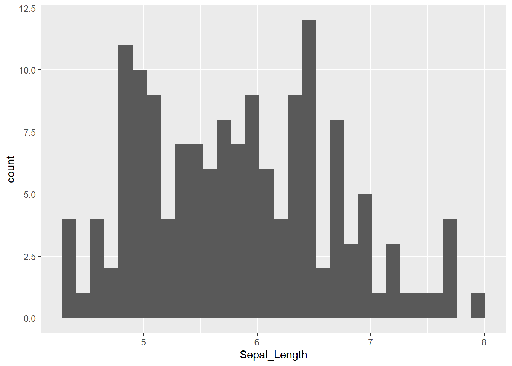
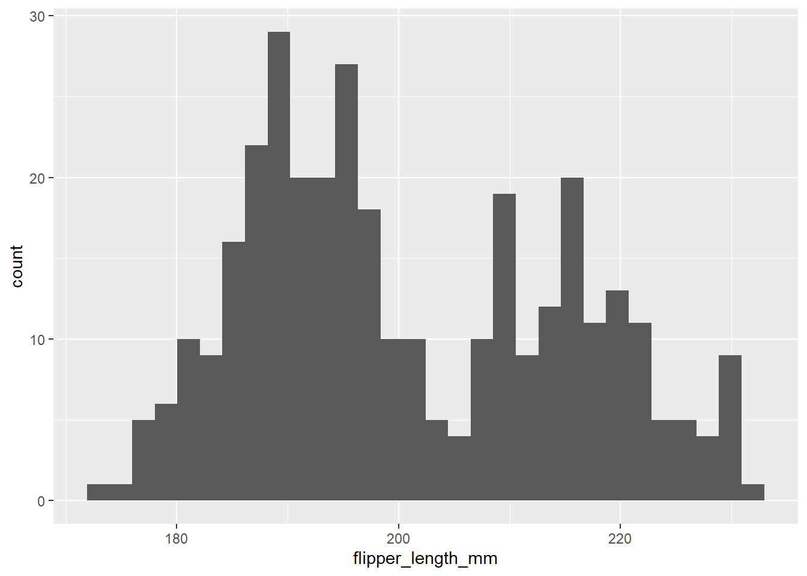

getwd()
Summary
In this lab you will learn how to:
- calculate summary statistics: arithmetic mean, median, standard deviation, interquantile range,
- calculate summary statistics for different groups in the data using
dplyr.
Import iris and penguins dataset
Task
Start the RStudio from the R project icon that you created in the previous lab!
To be sure that the working directory is set to your project folder, use the get getwd() function. The result should end with .../My first R project (if you followed the instructions in the second lab).
Import the dataset, assign it to an object called iris and inspect that it was loaded correctly:
iris <- read.csv(file = "01_data/iris.csv")
penguins <- read.table("01_data/penguins.txt")Summary statistics
Summary statistics include among other the following common measures of central tendency and variability of numerical variables:
- mean
- variance
- standard deviation (SD)
- standard error of mean
- median
- quantiles (25th and 75 th percentile)
- interquantile range (IQR).
Questions
- How is the arithmetic mean defined? Are there occasions when it is not an appropriate measure to use?
- What is variance and what standard deviation? In what units are the defined compared to the variable itself and the mean value?
- How is the median defined? In which occasions it is more appropriate to use it?
When to use each?
Explore at minimum graphically using the histogram and than decide which is more appropriate. If the distribution resembles normal, than mean and SD, if not, than median and quantiles. The histogram can be ploted with ggplot, in which we define what we want to be ploted on the x axis, the y axis will be drawn bY default. Than we need to add the geom_histogram():
Example of iris for Sepal_Length:
library(ggplot2)
ggplot(iris, aes(x = Sepal_Length)) +
geom_histogram()
And for penguins of fliper_length_mm:
ggplot(penguins, aes(x = flipper_length_mm)) +
geom_histogram() 
For each of the summary statistics above there is an appropriate R function to calculate it for us. First, we will calculate the median - median() function, quantiles - quantile() and interquantile range - IQR() function. We will calculate this for the column Sepal_Length of iris dataset, again remember that we access columns with $:
median(iris$Sepal_Length)[1] 5.8quantile(iris$Sepal_Length) 0% 25% 50% 75% 100%
4.3 5.1 5.8 6.4 7.9 IQR(iris$Sepal_Length)[1] 1.3Next, the mean or average value of our numeric variable, variance and standard deviation. For this we use functions mean(), var() and sd(), from before we know, that we use $ to access columns:
mean(iris$Sepal_Length)[1] 5.843333var(iris$Sepal_Length)[1] 0.6856935sd(iris$Sepal_Length)[1] 0.8280661Lets do the same for penguins:
median(penguins$flipper_length_mm)[1] NAThis is certainly not what you expected, right? Instead of a number we got back NA. This is because our dataset contains NA values in the column flipper_length_mm. We fix this by adding argument na.rm = TRUE to all of these functions. With this argument we tell R to ignore or dismiss NA values if it finds them. The functions with included argument:
median(penguins$flipper_length_mm, na.rm = TRUE)[1] 197quantile(penguins$flipper_length_mm, na.rm = TRUE) 0% 25% 50% 75% 100%
172 190 197 213 231 IQR(penguins$flipper_length_mm, na.rm = TRUE)[1] 23mean(penguins$flipper_length_mm, na.rm = TRUE)[1] 200.9152var(penguins$flipper_length_mm, na.rm = TRUE)[1] 197.7318sd(penguins$flipper_length_mm, na.rm = TRUE)[1] 14.06171Summary statistics for two or more groups
However, we know that our data consists of multiple species and it would be sensible to group it by the Species column.
library(ggplot2)
ggplot(iris, aes(x = Sepal_Length)) +
geom_histogram() +
facet_wrap(~Species)For this, we will return to the dplyr package, that enables to do this with ease - we can use the group_by() function to instruct R to treat groups separately. Next, we can use summarise() function to compute the summary statistics. We can also add the column, that will tell us the number of elements in each group with - n(). We will compute also the mean and the standard deviation of Sepal_Length.
Tip
The %>% is used to “chain” operations meaning that one operation follows the next in the specified order and with that our code is more compact, efficient and readable. Below code is therefore read as:
- take
irisobject - group data in
irisobject by categories inSpeciescolumn - within
summarisefunction compute:- number of individuals belonging to each group
n(), - mean value of column
Sepal_lengthfor each group, - and the standard deviation of
Sepal_length.
- number of individuals belonging to each group
The functions we will be using in the following examples are a part of the dplyr package, so we must load it before we can use them with library() function.
library(dplyr)
iris %>%
group_by(Species) %>%
summarise(
n(), # does not require any additional argument
mean(Sepal_Length), # you are already familiar with mean()
sd(Sepal_Length) # and sd() function
)# A tibble: 3 × 4
Species `n()` `mean(Sepal_Length)` `sd(Sepal_Length)`
<chr> <int> <dbl> <dbl>
1 setosa 50 5.01 0.352
2 versicolor 50 5.94 0.516
3 virginica 50 6.59 0.636The above call can be slightly modified, so the outcome is more informative. We will name our results so it is easier to understand what we have calculated. We will name the outputs as number_of_animals, mean_sep_length and sd_sep_length and put this names in front of the corresponding functions within summarise() function.
# We can name the results so it is easier to know what we got
iris %>%
group_by(Species) %>%
summarise(
n_individuals = n(),
mean_sep_length = mean(Sepal_Length),
sd_sep_length = sd(Sepal_Length)
) # A tibble: 3 × 4
Species n_individuals mean_sep_length sd_sep_length
<chr> <int> <dbl> <dbl>
1 setosa 50 5.01 0.352
2 versicolor 50 5.94 0.516
3 virginica 50 6.59 0.636Exploring relationship between two variables
Today we will take a step further and go from visualizing and analyzing uni-variate data to exploring relationships between two variables - bi-variate data. Very often in biology we measure more than one variable for each member of a population and we assume that these values are not completely independent of each other. One such example might be relationship between length and weight of a given animal species. We know that when animals grow, they are (usually) simultaneously growing in length (or height) and gaining weight. Another example might be measuring the amount of precipitation in multiple geographic areas and at the same time estimating the biomass of green plants in these same areas. We expect that there will be some kind of relationship between these two variables, but we don’t know what kind and how strong.
A commonly used method to examine the relationship between continuous variables is correlation. The statistic describing the relationship is the linear correlation coefficient, r, which is also known as the Pearson correlation coefficient. By definition it is standardized and scale independent and can take values between -1 and 1. A positive value of r suggests that the variables are positively linearly correlated, indicating that y tends to increase linearly as x increases. A negative value of r suggests that the variables are negatively linearly correlated, indicating that y tends to decrease linearly as x increases. There is no unambiguous classification rule for the quantity of a linear relationship between two variables. However, the following table may serve a as rule of thumb how to address the numerical values of Pearson product moment correlation coefficient.
Lets take a look at some simulated examples and potential relationship between numerical x and y variables. The plot title states the type of relationship and provides the calculated Pearson correlation coefficient using cor() function with two arguments - x = x and y = y. You can find the code generating this graphs in scripts folder named Simulated relationships:

The linear correlation coefficient was calculated for polynomial, exponential and circular relationship between x and y as well. In this cases this statistic is not relevant, as it is obvious from the plots, that the relationship between data is not linear (not a straight line). Also we need to be aware, that correlation between two variables does not necessarily mean causation. In other words, regardless of the value of correlation parameter r, we do not know if x variable is causing the changes in y variable. We can say, that with changes in x we observed some changes in y and whether this relationship is strong or weak and positive or negative.
A very trivial example:
So is Nicholas Cage causing people to drown in the pools? Or are drowned people causing that Cage is appearing in movies?
Lets take a look at a Iris data example. We will use function corrplot() to visualise correlations between all pairs of numerical variables in iris. The function is a part of corrplot package, which we need to install and load first.
install.packages("corrplot")
library(corrplot)Beforehand, we need to calculate correlation coefficients between numerical variables using cor() function to which we provide the columns with numerical data (columns 1 to 4 in the object iris):
correlation_coefficients <- cor(iris[,1:4])
correlation_coefficients Sepal_Length Sepal_Width Petal_Length Petal_Width
Sepal_Length 1.0000000 -0.1175698 0.8717538 0.8179411
Sepal_Width -0.1175698 1.0000000 -0.4284401 -0.3661259
Petal_Length 0.8717538 -0.4284401 1.0000000 0.9628654
Petal_Width 0.8179411 -0.3661259 0.9628654 1.0000000Than we use this results within the corrplot() function, and additionally specify method = "ellipse (the elements of the plots will be elliptical) and type = "lower (the lower panes of the grid will be filled - avoiding duplication):
corrplot(correlation_coefficients, method = "ellipse", type = "lower")Exercises
Task
Read the instructions carefully. If you don’t understand something or something doesn’t work straight away, first think about the problem/error, consult the materials in front of you, than google, than the neighbor on your left and on your right. If after all that you still don’t know how to fix the problem or proceed, than ask me for help!
For penguins dataset:
1.1) Create a histogram of body_mass_g that is divided by species and sex of the penguins. To do that, you will need to include ~ species + sex within the function, that divides the data.
1.2) Calculate median and interquantile range for bill_length_mm divided by species and island using dplyr package. Add also the column in which the number of individuals of each group will be shown.
1.3) Calculate mean and standard deviation for bill_depth_mm divided by species and sex using dplyr package. Add also the column in which the number of individuals of each group will be shown.
1.4) calculate correlation coefficients for all numerical variables in the data. Visualise the correlations using corrplot() function. As there are NA values in the data, you will need to add use = "complete.obs" within the parenthesis of the function.
Expected outputs of the exercises shown below:
# A tibble: 5 × 5
# Groups: species [3]
species island N median_bill_length iqr_bill_length
<chr> <chr> <int> <dbl> <dbl>
1 Adelie Biscoe 44 38.7 3.02
2 Adelie Dream 56 38.6 3.62
3 Adelie Torgersen 52 38.9 4.45
4 Chinstrap Dream 68 49.6 4.73
5 Gentoo Biscoe 124 47.3 4.25# A tibble: 8 × 5
# Groups: species [3]
species sex N mean_bill_length sd_bill_length
<chr> <chr> <int> <dbl> <dbl>
1 Adelie female 73 37.3 2.03
2 Adelie male 73 40.4 2.28
3 Adelie <NA> 6 37.8 2.80
4 Chinstrap female 34 46.6 3.11
5 Chinstrap male 34 51.1 1.56
6 Gentoo female 58 45.6 2.05
7 Gentoo male 61 49.5 2.72
8 Gentoo <NA> 5 45.6 1.37 bill_length_mm bill_depth_mm flipper_length_mm body_mass_g
bill_length_mm 1.0000000 -0.2350529 0.6561813 0.5951098
bill_depth_mm -0.2350529 1.0000000 -0.5838512 -0.4719156
flipper_length_mm 0.6561813 -0.5838512 1.0000000 0.8712018
body_mass_g 0.5951098 -0.4719156 0.8712018 1.0000000
Question
- What do you think about displaying the data of individuals with unknown sex (
NA)? Would it be sensible to omit it? If yes, in which cases?
Task
2.1) Import the dataset you downloaded from the internet in the previous lab.
2.2) Create histograms of numerical columns using ggplot.
2.3) Create histograms of numerical columns divided by sensible groups using ggplot.
2.4) Calculate summary statistics: mean, median, standard deviation and IQR for two numerical columns in your dataset. Divide the data into sensible groups.
Until the end of the class or homework